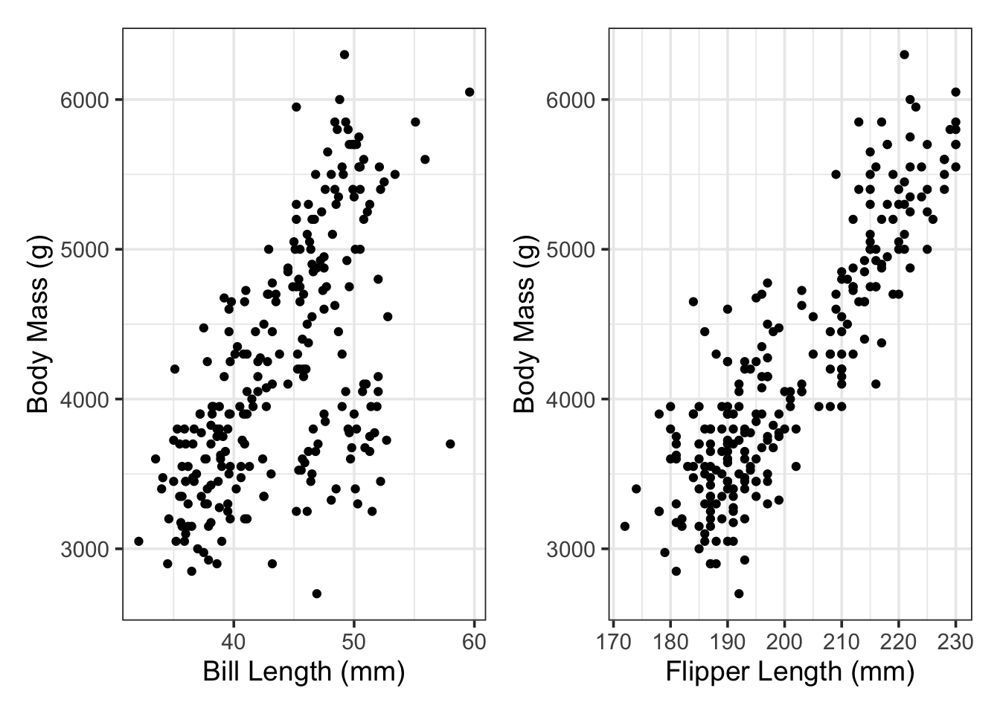

set.seed(123)
penguin_splits <- initial_split(penguins)
penguins_train <- training(penguin_splits)
penguins_test <- testing(penguin_splits)Simple Linear Regression
Objectives
This notebook gives an overview of Simple Linear Regression, where we’ll use a single predictor to predict a numerical response variable. After reviewing this notebook, you should be able to:
- Fit a simple linear regression model to training data using
tidymodels - Assess that model’s performance on the training data by looking at global model utility metrics, and by analyzing metrics for the model term.
- Interpret a simple linear regression model with a statistically significant predictor.
- Use a simple linear regression model to make predictions on new data.
- Evaluate model performance on the test set.
Simple Linear Regression
In building a simple linear regression model, we are making the claim that \(\text{response} = \beta_0 + \beta_1\cdot\text{predictor} + \varepsilon\) or \(\mathbb{E}\left[\text{response}\right] = \beta_0 + \beta_1\cdot\text{predictor}\). That is, our predictor is the only useful variable in predicting our outcome (response), and that all other fluctuation in the response values are the result of random noise (\(\varepsilon\)). This is not often the case, but simple linear regression models offer useful insights nonetheless.
In the previous notebook, we used bill_length_mm to predict body_mass_g for our penguins. Let’s return to the penguins data and build a couple of simple linear regression models. The first will use bill_length_mm to predict body_mass_g, but the second will use flipper_length_mm to predict body_mass_g. We’ll build, assess, and interpret both models.
Initial Exploration
We’ll start by splitting our data into training and test sets, as usual.
We know that we want to use bill_length_mm and flipper_length_mm to predict the body mass of our penguins. Let’s do some quick EDA to see if any potential relationships are visibly evident.
p1 <- penguins_train %>%
ggplot() +
geom_point(aes(x = bill_length_mm, y = body_mass_g)) +
labs(x = "Bill Length (mm)",
y = "Body Mass (g)")
p2 <- penguins_train %>%
ggplot() +
geom_point(aes(x = flipper_length_mm, y = body_mass_g)) +
labs(x = "Flipper Length (mm)",
y = "Body Mass (g)")
p1 + p2Warning: Removed 2 rows containing missing values or values outside the scale range
(`geom_point()`).
Removed 2 rows containing missing values or values outside the scale range
(`geom_point()`).
It seems like there are associations between body_mass_g and both bill_length_mm and flipper_length_mm individually. This gives us hope that our regression models will be statistically significant.
Build our Models
We’ll use our {tidymodels} framework to build our linear regression models. We’ll do the following for each model:
- Specify a linear regression model and set its engine.
- Build a recipe including the appropriate model formula.
- Package the model and recipe together into a workflow.
- Fit the workflow to our training data.
Let’s build and fit the model using bill_length_mm to predict body_mass_g.
mass_bill_spec <- linear_reg() %>%
set_engine("lm")
mass_bill_rec <- recipe(body_mass_g ~ bill_length_mm, data = penguins_train)
mass_bill_wf <- workflow() %>%
add_model(mass_bill_spec) %>%
add_recipe(mass_bill_rec)
mass_bill_fit <- mass_bill_wf %>%
fit(penguins_train)Now we’ll build and fit the model using flipper_length_mm to predict body_mass_g.
mass_flipper_spec <- linear_reg() %>%
set_engine("lm")
mass_flipper_rec <- recipe(body_mass_g ~ flipper_length_mm, data = penguins_train)
mass_flipper_wf <- workflow() %>%
add_model(mass_flipper_spec) %>%
add_recipe(mass_flipper_rec)
mass_flipper_fit <- mass_flipper_wf %>%
fit(penguins_train)We’ve got our fitted models! We’ll assess the quality of the models in the next section.
Assessing Model Utility
We’ll engage in three levels of model assessment at this stage:
Global assessment of model utility
Assessment of individual model terms
Model performance on unseen test data\(^*\)
- While we’ll look at how the model performs on unseen test data now, we generally would not do that at this stage. We want the test data to remain unseen until we have identified our final model.
Global Assessments of Model Utility
We’ll pipe our fitted models to glance() and will assess our model using the r.squared, sigma, and p.value metrics. Let’s start with the model using bill_length_mm as the sole predictor.
mass_bill_fit %>%
glance() %>%
kable() %>%
kable_styling()| r.squared | adj.r.squared | sigma | statistic | p.value | df | logLik | AIC | BIC | deviance | df.residual | nobs |
|---|---|---|---|---|---|---|---|---|---|---|---|
| 0.3593701 | 0.3568479 | 658.043 | 142.4848 | 0 | 1 | -2023.498 | 4052.995 | 4063.631 | 109987231 | 254 | 256 |
Firstly, we see that the \(p\)-value for the overall model is very small. This indicates that our model has some utility in predicting/explaining penguin body mass. Since we are assessing a simple linear regression model, we’ll look at the r.squared value instead of adj.r.squared. From r.squared, we see that “Approximately 35.94% of the variation in penguin body mass is explained by bill length”. Finally, we see that the residual standard error (sigma) on the training data is about \(658\)g. This residual standard error tells us that we should expect our predictions, on average, to be within about \(\pm 1,316\)g.
Now let’s look at our model using flipper_length_mm as the sole predictor and see how it stacks up the bill length model.
mass_flipper_fit %>%
glance() %>%
kable() %>%
kable_styling()| r.squared | adj.r.squared | sigma | statistic | p.value | df | logLik | AIC | BIC | deviance | df.residual | nobs |
|---|---|---|---|---|---|---|---|---|---|---|---|
| 0.7646157 | 0.763689 | 398.8774 | 825.0863 | 0 | 1 | -1895.34 | 3796.68 | 3807.315 | 40412211 | 254 | 256 |
Our flipper length model is superior in every way! This model also has a statistically significant \(p\)-value, indicating that it has some value in predicting/explaining penguin body mass. The r.squared value indicates that “approximately 76.37% of the variation in penguin body mass is explained by our model”. The residual standard error (sigma) indicates that we can expect this models predictions, on average, to be accurate to within about \(\pm 797\)g.
Now let’s move to assessing the individual model terms.
Assessing Model Terms
We’ll now pipe our fitted models into extract_fit_engine() and tidy() to obtain metrics on the individual \(\beta\) values (those individual terms containing predictor variables in our model). Again, let’s look at the model using bill_length_mm as the sole predictor first.
mass_bill_fit %>%
extract_fit_engine() %>%
tidy() %>%
kable() %>%
kable_styling()| term | estimate | std.error | statistic | p.value |
|---|---|---|---|---|
| (Intercept) | 320.34582 | 327.84621 | 0.9771222 | 0.3294383 |
| bill_length_mm | 88.57962 | 7.42078 | 11.9366986 | 0.0000000 |
From the data frame above, we have several takeaways. First, the fitted model is \(\mathbb{E}\left[\text{body\_mass\_g}\right] \approx 320.35 + 88.58\cdot\text{bill\_length\_mm}\). Since the \(p\)-value on the bill_length_mm predictor is low, this indicates that bill_length_mm is a statistically significant predictor of body_mass_g. This means we can use this model to make predictions about the body mass of a new penguin (as long as we remain aware of the expected prediction error, \(\pm 2\)sigma), and we can also interpret the effect of bill_length_mm on body_mass_g (we’ll see this in the Model Interpretations section of this notebook). We shouldn’t overlook the std.error column. This gives us the standard error in the coefficient estimates. We can use that standard error to compute confidence intervals for the coefficient estimate – that is, we can be about 95% certain that the coefficient on bill_length_mm is somewhere between \(88.58 - 2\left(7.42\right)\) and \(88.58 + 2\left(7.42\right)\).
We can discover similar information about our model which uses flipper_length_mm as the sole predictor of penguin body mass.
mass_flipper_fit %>%
extract_fit_engine() %>%
tidy() %>%
kable() %>%
kable_styling()| term | estimate | std.error | statistic | p.value |
|---|---|---|---|---|
| (Intercept) | -5768.75714 | 348.042020 | -16.57489 | 0 |
| flipper_length_mm | 49.67168 | 1.729255 | 28.72431 | 0 |
From here, we note that the flipper_length_mm model term is statistically significant, given the very small \(p\)-value. The estimated model is \(\mathbb{E}\left[\text{body\_mass\_g}\right] \approx -5768.76 + 49.67\cdot\text{flipper\_length\_mm}\). Again, we can identify from the std.error column that we are approximately 95% certain that the coefficient on flipper_length_mm is somewhere between about \(46.21\) and \(53.13\).
We now have two separate models that we can utilize to predict penguin body mass as well as to interpret, in the case that we are interested in making inferential claims about how penguin bill length or flipper length is associated with penguin body mass. The global model metrics indicate that the model using flipper length to predict body mass is a better overall model.
How do we know that these models will perform well on new data?
Assessing Predictive Performance on Unseen Test Data
It could be the case that our models are just doing well on the data they were trained on and can’t be reliably utilized on new penguins. For this reason, the residual standard error (sigma) and R squared (r.squared) metrics from the global model metrics are biased estimates of model performance – the model had an unfair advantage on the training data; it knew all of the correct penguin body masses! This is the reason we’ve held out the test data. We can measure the models’ perfomances on the penguins in the test set to ensure that our models perform the way we expect. In fact, the metrics we compute on the unseen data are the ones we really should use as estimates for future model performance.
Let’s use our model to make predictions for the body masses of the penguins in the test data set. We’ll use those predictions to compute a test RMSE and a test R Squared. As a reminder, we’ll augment() our test data, adding a predictions (.pred) column, and then use the rmse() function
my_metrics <- metric_set(rmse, rsq)
mass_bill_fit %>%
augment(penguins_test) %>%
select(body_mass_g, .pred) %>%
my_metrics(body_mass_g, .pred) %>%
kable() %>%
kable_styling()| .metric | .estimator | .estimate |
|---|---|---|
| rmse | standard | 607.0706520 |
| rsq | standard | 0.3379565 |
The model using bill_length_mm as the sole predictor of body_mass_g seems to have done slightly better on the test set than it did on the training data. This is interesting and we’ll discuss it more in the coming weeks! For now, this output indicates that we should expect our model’s predictions to be accurate to within about \(\pm 1214\)g.
Let’s look at how our other model performs on the unseen test data.
my_metrics <- metric_set(rmse, rsq)
mass_flipper_fit %>%
augment(penguins_test) %>%
select(body_mass_g, .pred) %>%
my_metrics(body_mass_g, .pred) %>%
kable() %>%
kable_styling()| .metric | .estimator | .estimate |
|---|---|---|
| rmse | standard | 380.8203026 |
| rsq | standard | 0.7405649 |
Again, the model using flipper_length_mm to predict penguin body mass has performed slightly better than expected on the test data. Perhaps we’ve gotten an easy test set – we’ll need to find a better way to control for this! We want our performance estimates to be truly unbiased. While the model hadn’t seen these test penguins during the training process, it does seem that these penguins may be more “typical” than some of the penguins in the training set.
Interpreting Our Models
It isn’t always the case that we are solely interested in prediction or predictive performance. Sometimes we are building models to describe associations or other phenomena. Linear regression models are particularly useful for this because they are parametric – we get a “slope” parameter for each of our model terms! We can interpret these slopes just as you’ve done in the past – as a rate of change – if our predictor variable increases, how do we expect our response variable to change.
In order to make these interpretations, let’s look back at the data frame containing our model terms. As a reminder, we pipe our fitted model into extract_fit_engine() and tidy() to get this output. As usual, we’ll work with the bill length model first.
mass_bill_fit %>%
extract_fit_engine() %>%
tidy() %>%
kable() %>%
kable_styling()| term | estimate | std.error | statistic | p.value |
|---|---|---|---|---|
| (Intercept) | 320.34582 | 327.84621 | 0.9771222 | 0.3294383 |
| bill_length_mm | 88.57962 | 7.42078 | 11.9366986 | 0.0000000 |
From the table above, we obtain our estimated model: \(\mathbb{E}\left[\text{body\_mass\_g}\right] \approx 320.35 + 88.58\cdot\text{bill\_length\_mm}\). From this model, we can see that the slope coefficient on bill_length_mm is positive, so longer bills are associated with more massive penguins. There are a couple of ways we can interpret the magnitude of the coefficient (the effect size) as well:
- Using the Estimate: Given two penguins, one whose bill length is one millimeter longer than the other, we would expect the penguin with the longer bill to be about \(88.58\)g more massive, on average.
- Using the Estimate: For each additional millimeter of bill length, we expect a penguin to have about \(88.58\)g more mass, on average.
- Using Confidence Interval for the Estimate: For each additional millimeter of bill length, we expect a penguin to have somewhere between \(73.74\)g and \(103.42\)g more mass, on average.
We could make similar interpretations from the model using flipper length to predict body mass. Try it!
Warning: Inferences like these interpretations of our model coefficients are only valid if our regression assumptions are satisfied. As a reminder, those assumptions are:
- All of our observations are independent. (independence)
- Our observations come from a random sample which is representative of the population. (representative sample)
- The relationship between our response variable and the predictor variable is truly linear. (linearity)
- The standard error of the residuals (our model’s prediction errors) is constant and does not depend on the value of the predictor variable. (homoscedasticity)
- For any fixed value of the predictor variable, the values of the response in the population are normally distributed. (normality)
Summary
There’s a lot of information in this notebook, but here’s a recap of the most important items.
Global model performance metrics (
fitted_model %>% glance())The
p.valueis associated with a global test for model utility. This is a hypothesis test asking whether any of the predictor terms in the model have non-zero coefficients. For simple linear regression, we only have one predictor term, so the hypotheses are \(\begin{array}{lcl} H_0 & : & \beta_1 = 0\\ H_a & : & \beta_1 \neq 0\end{array}\).For simple linear regression, the
r.squaredvalue measures the proportion of variation in the response which is explained by our model. (For multiple linear regression, we’ll look toadj.r.squaredfor this instead)- Values closer to \(1\) are better, but we should be skeptical of values too close to \(1\).
The
sigmavalue estimates the residual standard error for our model’s predictions.- Lower values are better here.
- While biased, we can use
sigmato estimate how accurate we might expect our predictions to be. With approximately 95% confidence, our predictions are accurate to within \(\pm 2\)sigma.
Metrics for individual model terms (
fitted_model %>% extract_fit_engine() %>% tidy())The
estimatescolumn gives the estimated model coefficients (the estimated \(\beta\) values).The
std.errorcolumn gives the estimate of the standard error for each model coefficient.The
p.valuecolumn gives the \(p\)-value associated with a test asking whether the coefficient corresponding to the predictor model term (predictor variable) is non-zero.- In the case of simple linear regression, this is the same as the global test for model utility because there is only one model term containing a predictor.
Unbiased estimates for future model performance (
fitted_model %>% augment(test_data) %>% metric(truth, .pred))- We need to evaluate our model on unseen/hidden data to get an unbiased estimate of model performance.
- For now, we’ll use the test data for this but we’ll soon see real problems associated with that approach. We’ll find something better to do instead!